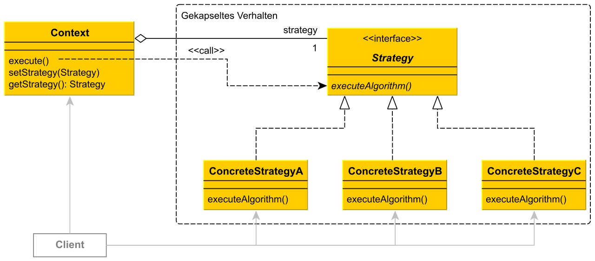

Software Design Patterns¶
Was sind Software Design Patterns?¶
Software Design Patterns (Entwurfsmuster) dienen als Templates bzw. Musterlösungen für Probleme, die in der Softwareentwicklung immer wieder auftreten. Ziel ist es eine schnelle und effiziente Arbeitsweise zu schaffen, sowie dem Code eine Struktur zu geben, damit Außenstehende die Funktion eines Codes schneller erkennen können. Es wird zwischen drei Klassen unterschieden, abhängig von der Problematik der Situation: Creational Patterns, Structural Patterns sowie Behavioural Patterns.
Behavioural Patterns¶
Wir haben uns dazu entschieden auf das Behavioural Patterns, zu Deutsch Verhaltensmuster, näher einzugehen. Verhaltensmuster sind Muster, welche komplexes Verhalten von Code kapseln. Ziel ist es für Außenstehende eine simple und übersichtliche Struktur zu erschaffen. Ein passendes Beispiel hierfür wäre Google Maps. Die App berechnet die Route von A nach B. Dabei muss der Faktor des Fortbewegungsmittels in Betracht gezogen werden - es mach einen Unterschied ob man zu Fuß, mit dem Auto oder mit dem Fahrrad unterwegs ist. Erst zur Laufzeit entscheidet das Strategy Pattern welcher Algorithmus benötigt wird. Was bei diesem Beispiel auffällt, ist, dass die Routenberechnung eigentlich gleichbleibt. Den Unterschied macht die Wahl des Fortbewegungsmittels aus. Die Vereinfachung und Kapselung der Komplexität nach außen ist Zweck des Strategy Patterns. Der große Vorteil hierbei ist, dass man neue Strategien implementieren kann, ihne den Kontext zu ändern. Bezogen auf unser Beispiel ist es auch ein Vorteil, dass man Algorithmen innerhalb eines Objektes in Laufzeit wechseln kann. Die Vorteile des Strategy Pattern können sich jedoch auch in Nachteile umwandeln, wenn man nur wenige Algorithmen hat, welche selten wechseln (Merke: Entwurfsmuster dienen zur Vereinfachung, Übersichtlichkeit und Stabilität!)

Die Grafik visualisiert die Funktion des Strategy Patterns (Kontext = Objekt; Strategie = abgekapselter Algorithmus). Es ist ersichtlich, dass der Kontext nicht abhängig von einer Implementierung ist, daher können unterschiedliche Verhalten zugewiesen werden, ohne dass ein Code geändert werden muss. Zusammenfassend kann man sagen, dass das Verhalten unabhängig vom Kontext wird. Der Kontext selbsst wird unabhängig von einer Implementierung.